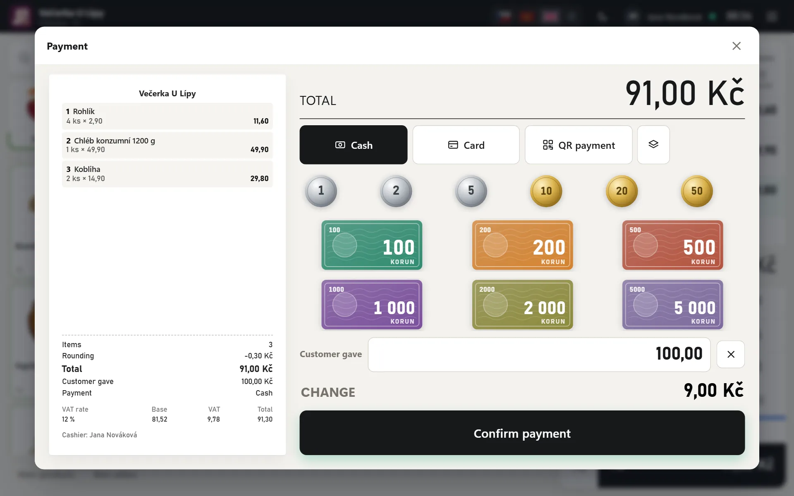
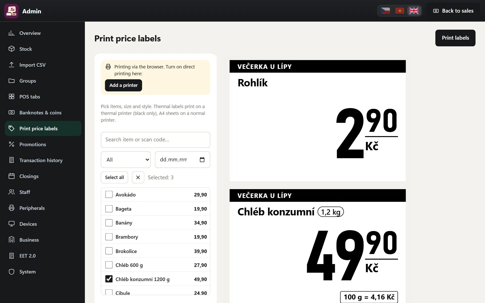

Selling on a touchscreen
Large product tiles with pictures, groups, PLU, a keypad with multiplication, discounts on an item or the whole purchase, and parking a purchase. You can check a price and stock level without making a sale.
Sales, EET, receipts, cash and closing always work. Other features – stock, price labels, deposits on bottles and crates, scales, promotions, customer display, QR payments, tables and bills, or tips – you switch on according to what your business needs. What is switched on from the start depends on your type of business. You can also add paid add-ons.

Large product tiles with pictures, groups, PLU, a keypad with multiplication, discounts on an item or the whole purchase, and parking a purchase. You can check a price and stock level without making a sale.
Barcodes are read by an ordinary USB scanner. On a mobile phone or tablet, the camera does the job – at the till, when receiving goods and in the item card.
For goods sold by the kilogram, the POS asks for the weight. It also reads barcodes from scale labels – with the weight or the price.
Promotions until a chosen date and a price from a certain quantity, for example cheaper beer from 6 bottles. The POS applies them automatically.
Returnable bottles and crates. A deposit can be linked to beer – it is then added automatically and removed again when the beer is removed. Buying back deposits takes one tile.
A large QR code for payment by bank transfer on the POS, on the customer display and on the receipt. Customers can also pay with a combination – part by card or QR, the rest in cash. Card payments go through your separate card terminal.
With an empty search, Enter opens payment, and in payment it books the sale. With a barcode scanner you sell at rush hour without a mouse or extra clicks.
For pubs, bars and restaurants – in the Food service (Gastro) plan. How a pub will be set up
A tables screen by room, showing the amount spent and the time since the last order. Several bills at one table, a bill under a name at the bar. Orders can be taken at the POS or on a tablet at the table.
Each guest pays for their own items. You can move items or a whole bill to another table or to a new bill. The receipt and EET record are only created on payment.
After ordering, a ticket prints on the receipt printer in the kitchen or at the bar, including a note for the kitchen. When an item is removed, a cancellation ticket prints.
From 1 January 2027, new VAT (DPH) and tipping rules apply in food service. SuperKasa handles both free within the plan price – no paid add-on.
On the POS you switch whether the guest is eating in or taking away. From 1 January 2027, soft drinks and coffee served on site are taxed at 12%, take-away at 21% – the receipt uses the correct rate and the price for the customer stays the same. The receipt says “Prodej: S sebou” (Sale: take away). Each product group has its take-away rate in Admin.
After payment, tap Tip – who gets it, how much, cash or card. A tip for employees is not a sale, does not go to EET and is shown separately in the closing. A tip the business keeps goes to sales and EET. In Admin you see a monthly overview by person and the share of income: the POS watches the 7% limit for tax exemption, and you can download the payroll summary as a CSV. In the Shop, Food service (Gastro) and Services plans.
Check VAT rates and the conditions for tax-free tips with your accountant – by law, the exemption up to 7% applies to employees in food service.
Sales are sent to EET 2.0 (electronic sales registration) in the background. If the internet goes down, the POS keeps retrying and the status bar shows whether everything has been sent. How it works
After payment, the receipt goes straight to the receipt printer (Epson TM-T88 and compatible, 80 or 58 mm rolls). On a computer, just open the till with a Chrome shortcut set to print without a dialog – the guide is right in the POS. A cash drawer connected to the printer opens together with the receipt print (when printing through Windows, set this in the printer driver).
A switch in the bar above the purchase turns printing off when the customer doesn't want a receipt, and on again. Each till remembers the setting.
Void a whole receipt or refund selected items from an earlier purchase, with a manager's PIN and a required reason. Nothing is deleted – a new receipt is always created.
Opening cash, cash in and cash out, interim and end-of-day closing with counting of notes and coins and the difference against the POS. All devices in the shop sell into one shared shift, so there is one total and one closing. After 20 hours of an open shift the POS reminds you to close, and at 23:59 it closes by itself. Cashiers can do a blind closing.
The day's sales by VAT rate and payment method on a single slip. Print it with one tap for your accountant or your files.
Sales by VAT rate, payment type, cashier and group, average purchase, discounts, voids and best-selling goods. Charts by hour and by day.
Rounding to whole crowns, suggested notes and change calculation. A reminder to take cash out when it goes over a limit.
Every live receipt carries a fingerprint of its data chained to the previous receipt. One button verifies that no receipt was changed or deleted afterwards.
The customer gets the receipt as a link on their phone – no paper.

Receive goods by scanning, with supplier, invoice number and purchase price. A shelf count changes only the goods you scanned. Minimum stock alerts and order suggestions based on sales.
Best-before date when receiving goods and in the item card, an overview of goods that will soon expire, and a label right on the tile. You can write off unsold or expired goods.
Print price labels on the receipt printer (Epson TM-T88 and compatible), on a label printer or on A4. With price per kg, litre or 100 g, a crossed-out promotional price and a barcode. You can easily pick the goods whose price has changed.
Scan an unknown barcode and the POS looks up the name and photo in the shared SuperKasa database – even for cigarettes and local products. You just check the name and add the price. Only the code, name, pack size, group, VAT rate and product photo go into the database – never prices, sales or details about your shop. You can switch contributing off in Admin → System.
Bring in goods from a CSV file, even from another POS's export. Repeating the import doesn't create duplicates, it only updates prices. Product photos are added by EAN.
Orders from E-shop super arrive straight at the till. The online shop and the till share one stock, so nothing is sold twice. Connect once, then manage the online shop from the till without another password.
Depending on your type of business, it creates groups with VAT rates, tiles and sample items – bakery, fruit, vegetables, deposits, coffee or services. Choose your type of business
Or describe in your own words what you sell, and the POS will suggest groups with VAT rates, pictures and first items – free and offline, in Czech, Vietnamese or English. You will see the suggestion and can edit it. Check the VAT (DPH) rates with your accountant.
Czech, Vietnamese and English. Each cashier has their own language and switches it with one button. The customer receipt is always in Czech.
Type what you need – for example “how much did we take today” or “raise beer prices by 5%” – and the assistant prepares it in the POS. Before it changes anything, it shows you and waits for your confirmation. It understands Czech, Vietnamese and English.
Log in with a PIN, with cashier, manager and owner roles. The change log shows who changed what.
A second screen facing the customer: the purchase with photos, the QR code for payment, the change due and, between purchases, your promotions.
Open the till in the browser on a computer, tablet or phone. All devices in the shop sell into one shared shift with one total and one closing. On a new device the owner signs in with e-mail and password, then staff use their PIN.
The shop's data is backed up every day on the server, and a copy is also kept off the server. The EET certificate key is stored only in encrypted form.
Export receipts, closings and other data at any time. Export still works for 12 months after your rental ends.
New versions arrive automatically, included in the plan. Nothing to install or download.
If the internet goes down, you keep selling for cash and card. Receipts upload by themselves once you're back online and go to EET with their original time. QR payments, points and table bills need a connection.
A private link to an overview on your phone: today's sales, payments, staff, top items, open tills with the cash in the drawer, the shift schedule and EET status. Read-only, no device pairing, from anywhere.
Your phone tells you about every sale – amount, payment, device, cashier and items. Free through the browser, no extra app. You can switch notifications off at any time. On iPhone, first add SuperKasa to the home screen (Share → Add to Home Screen) and open it from the icon.
The till prints to the printer you already have in Windows, or via Bluetooth and USB on an Android tablet. Android phones and iPhones can print on the main till's printer, even over the internet.
SuperKasa Cloud: create your shop on app.superkasa.cz and the till runs at your shop's own address – on a computer, tablet or phone. The owner signs in with e-mail and password, staff with their PIN. It prints to the printer installed on the device. Sign in
Features beyond the plan that you add only when you will really use them. The same price for every type of business, free during the 10-day trial. Add-on prices
Cashiers clock in and out with a PIN on the POS. A weekly shift schedule, planned vs. worked hours and a report for payroll.
CZK 79 a month incl. VAT · business types: Shops, Food & drink, Services · Add-on prices
A customer card or phone number: points for purchases, a discount for points, a permanent discount for VIPs. Gift vouchers with a barcode and balance; reported to EET 2.0 under § 17(2) of Act No. 180/2026 Coll. – check with your accountant.
CZK 69 a month incl. VAT · business types: Shops, Food & drink, Services · Add-on prices
An appointment calendar for salons and services (who, when, how long, which service) and table reservations. It watches for overlaps, and you sell the booked service with one tap.
CZK 99 a month incl. VAT · business types: Services, Food & drink · Add-on prices
Ingredients for coffee, meals, cocktails and cakes: a sale deducts the ingredients from stock, a void puts them back. Cost price, margin and how many more portions you can make.
CZK 79 a month incl. VAT · business types: Food & drink · Add-on prices
Voids, refunds, cancelled sales, removed items, discounts, cash drawer openings and closing differences per cashier – the POS shows who is well above average.
CZK 69 a month incl. VAT · business types: Shops, Food & drink, Services · Add-on prices
An add-on is paid separately on top of the plan (CZK 189), 10% cheaper per year. No commitment – it is unlocked by the same licence key as the plan, and you switch it on in Admin → System → Register features. Pricing
Give us a call and tell us what your business needs. We keep developing SuperKasa based on what shops need.